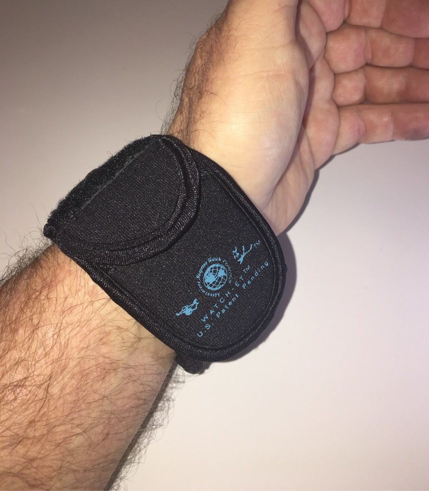

From the blog
Cold Weather Watch Care
November 10, 2026

Summer gets the blame for watch damage, but winter does its share. Cold air, heavy gloves, road salt, and the jump from freezing outdoors to warm indoors all put wear on a watch. A few simple habits keep yours looking new until spring.
Gloves are a scratch risk
Work gloves and winter gloves drag across a watch face every time you pull them on and off. Zippers, Velcro cuffs, and stiff leather all leave marks. If your gloves go over the watch, the face takes the rub all day. Slip the watch under the sleeve and under the glove cuff, or cover the face before the gloves go on.
Shovels, scrapers, and salt
Winter chores are hard on a wrist. Snow shovels, ice scrapers, and bags of salt put your watch against metal, plastic, and grit for an hour at a time. Road salt and deicer splashed up from the street dry on the case and strap and dull the finish if they sit there. Rinse the watch with clean water after a salty day, and dry it before you put it away.
The cold to warm jump
Coming in from the cold into a heated truck or house fogs the crystal and can leave moisture inside the case over time. Give the watch a few minutes to warm up before you wipe the face, and never set it right next to a heater vent or a wood stove. Slow and steady beats a blast of hot air.
Smartwatch batteries feel the cold too
If you wear a smartwatch, you have probably noticed the battery drains faster on a cold morning run or a long day outside. Keeping the watch covered helps it hold its charge a little longer, and it keeps snow and slush off the screen and sensors. Charge it indoors at room temperature, not in a freezing truck.
Straps stiffen in the cold
Leather and rubber straps get stiff when the temperature drops, and a stiff strap cracks easier at the lugs. Loosen the strap a notch so it is not fighting your wrist, and let it warm up indoors before you bend it around. A sleeve over the watch guards the case while the strap does its job.
Winter is long, and your watch goes through all of it with you. The WATCH-ET sleeve is a simple layer of neoprene that covers the face and case against gloves, grit, salt, and scrapes, with a side pocket for small essentials. It slides on in seconds and comes off just as fast when you step inside.
Winter is coming. Guard your watch.
Medium $23 fits watches up to 48mm. Large $25 fits up to 53mm. Five colors.
Order Yours More Tips